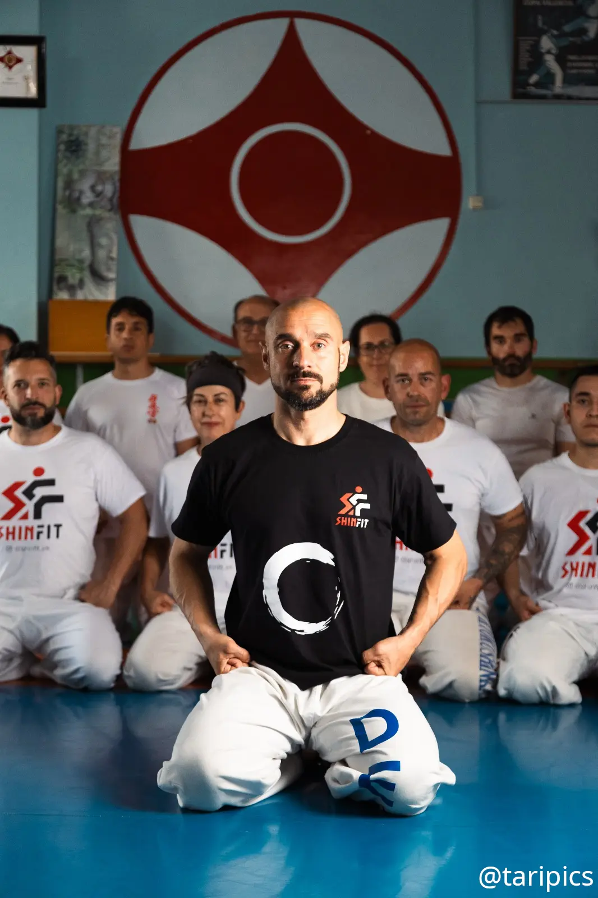

Progresión real
El aprendizaje del Karate Kyokushin se organiza por grados, con objetivos claros para cada etapa.
Ikigai Dojo · Babel
Entrena cuerpo y mente a través del Karate Kyokushin, con una progresión exigente y adaptada a tu nivel. Más de 30 años de experiencia sobre el tatami.
Karate Kyokushin
En nuestro dojo Ikigai Babel Alicante se practica Karate Kyokushin. SHINFIT es la marca y la plataforma desde la que compartimos la actividad del dojo, sus horarios y contenidos.
Las clases combinan técnica, fuerza, movilidad y disciplina para que avances con seguridad. No necesitas experiencia previa: solo ganas de aprender y constancia.
El aprendizaje del Karate Kyokushin se organiza por grados, con objetivos claros para cada etapa.
Técnica, kata y kumite junto a fuerza, coordinación, movilidad y resistencia.
Una hora para desconectar del ruido, concentrarte y trabajar con propósito.
Los tres valores que sostienen el progreso dentro y fuera del tatami.

Tu instructor
Una vida dedicada al Karate Kyokushinkai, la competición y la enseñanza.
Mi objetivo es que cada alumno encuentre en el karate una forma de superarse: con exigencia, sin prisas y respetando siempre su punto de partida.
Entrena con nosotros
Estamos en Babel, Alicante, en Carnavalia, calle Artes Gráficas 17. Puedes venir a probar antes de decidir.
Clases semanales
Tarifas claras
Empieza con una clase de prueba y descubre si el Karate Kyokushin encaja contigo.
40 €/ mes
Un único pago mensual que te permite asistir a las tres clases de cada semana. Es la opción con mejor relación entre precio y número de clases si quieres entrenar con regularidad.
Quiero probar40 €/ 10 clases
Diez clases para distribuir en el tiempo según tu disponibilidad. Pensado para personas que, por trabajo o vida personal, no pueden asistir a los tres entrenamientos semanales.
Quiero probarAntes de empezar
Una introducción sencilla al karate y a la forma de entrenar en nuestro dojo.
El karate es un arte marcial japonés cuyo nombre significa “mano vacía”. Su práctica combina técnicas de golpeo, defensa, desplazamiento y control corporal con valores como el respeto, la constancia y la disciplina.
No consiste únicamente en aprender a combatir: también es un método de desarrollo físico y mental en el que cada alumno progresa de forma gradual.
Kyokushin es un estilo de karate fundado por Masutatsu Oyama, reconocido por su entrenamiento exigente, su preparación física y el combate de contacto. Es el estilo de karate que se practica en nuestro dojo.
SHINFIT es la marca y plataforma desde la que presentamos el dojo y compartimos sus contenidos.
Su aprendizaje busca desarrollar una técnica sólida, resistencia, autocontrol y espíritu de superación, siempre mediante una progresión adecuada al nivel de cada persona.
La primera clase sirve para conocer los preceptos básicos del karate y probar cómo se entrena el estilo Kyokushin. Te explicaremos la dinámica del dojo, las normas de respeto y algunas posiciones, desplazamientos y técnicas fundamentales.
La intensidad se adapta a tu punto de partida. El objetivo no es que llegues sabiendo, sino que puedas experimentar una clase de Kyokushin y entender cómo sería tu progresión.
El entrenamiento se construye sobre tres pilares: técnica, para aprender y perfeccionar los movimientos; kumite, para aplicar lo aprendido en combate; y kata, para trabajar secuencias, precisión, coordinación y concentración.
Estos contenidos se integran en una preparación física completa que incorpora trabajo cardiovascular, movilidad y elasticidad. Las clases varían, pero mantienen una progresión coherente para mejorar sin perder la base técnica.
Próximamente
La futura plataforma de contenidos del dojo para seguir aprendiendo Karate Kyokushin también fuera del tatami.
Da el primer paso
Cuéntanos quién eres y cuándo te viene mejor. Al enviar, abriremos WhatsApp con tu solicitud preparada para confirmar la clase.